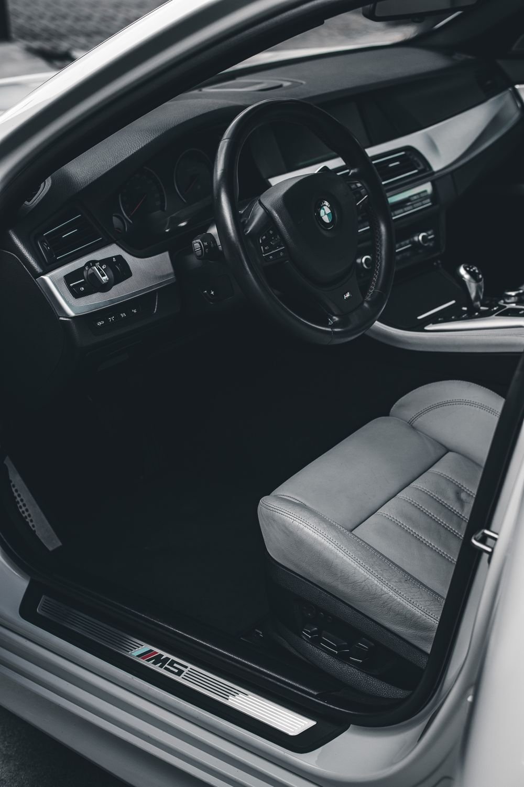

Our mission
Make travel feel personal.
To turn the practical act of getting somewhere into a thoughtful part of the day, with comfort, clarity and care at its centre.
The story behind the journey
We believe the most memorable experiences begin with the simplest things: a warm welcome, a thoughtful detail, and the feeling that someone understands.

The details make the difference.
A considered perspective
An experience shaped from the journey outward.
Our perspective began behind the wheel, where the smallest details can change the entire day. A clear pickup plan. Time to settle in. A route that gives an occasion room to unfold.
Luxury carries that understanding into private travel across Austin and the Texas Hill Country. From airport arrivals and business journeys to weddings and unhurried escapes, our approach starts with the person making the journey.
We bring planning and personal attention together to create something beautifully simple: the freedom to enjoy where you are, and look forward to where you’re going.
Thoughtfully yours, LuxuryWhat guides us
A consistent philosophy, whether your journey takes an hour, an evening or a whole day.
Our mission
To turn the practical act of getting somewhere into a thoughtful part of the day, with comfort, clarity and care at its centre.
Our vision
To inspire a more considered way to travel, where quality is measured in how an experience feels and how well it fits the person.
The values we travel by
We listen first. Understanding your plans and preferences is the foundation of a better journey.
Personal space and a professional approach create room for you to relax, reflect or focus.
The details are part of the experience, from the first conversation to the final destination.
Thoughtful local discoveries and sincere hospitality make an experience feel connected to its place.
From first hello to final arrival
Tell us your destination, occasion and the details that matter to you.
Discuss the itinerary, timing, preferences and availability with our team.
With arrangements agreed, look forward to the day and enjoy the ride.
The next destination is yours
Let’s begin with a conversation, and take it somewhere wonderful.
Plan your journey